In this tutorial, we are going to create a small part of the mitotic cell cycle. There are ten steps in this tutorial:
You can download an installer from the Reactome download site. Choose the appropriate installer for your platform.
After you download the installer, double click the installer to start the installation. Follow the instructions to finish the installation. Under Windows, the default installation directory is Program Files/ReactomeAuthorTool, and the directory contents should look like this:
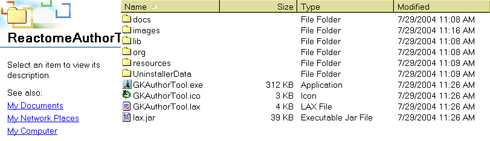
Double click the installed file "GKAuthorTool.exe" to launch the author tool.
To create a new project, click "New Project" under the File menu, type Ctrl-N, or click the new project button 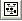 in the toolbar. Input "Mitotic Cell Cycle" as the display name, and select "Homo sapiens" for Taxon in the Taxon/Localization tab. Click the OK button in the property dialog to create the new project.
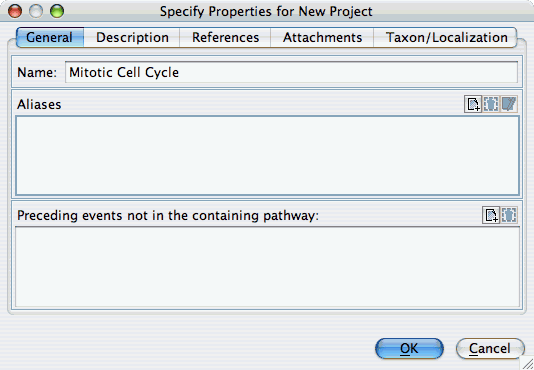
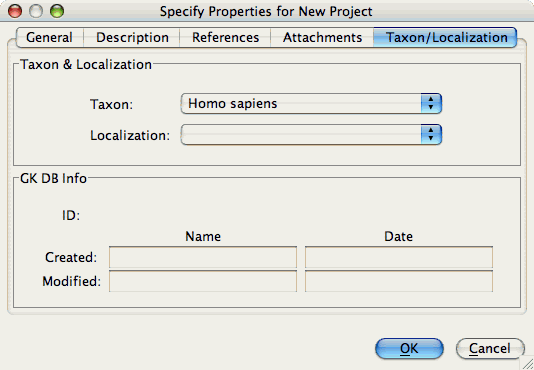
An application window will open for the new project, divided into five sections. The top-left pane is the process tree where all objects added to the opened project are listed. The bottom-left tree lists entities
copied from the central Reactome knowledgebase, that are available to be used in reactions created in the editing process. The right pane is the task tree for each newly created molecule, reaction and pathway. This tree lists all the tasks needed to annotate that molecule, reaction or pathway fully.
As tasks are successfully completed, task names are automatically removed from this list. The top panel in the center of the window is
the graphic editor pane. This panel is used to create new molecules and complexes, organize these into reactions in which they participate, and arrange these reactions into pathways. The bottom panel in the center of the window is the property pane. It is used to edit properties of the object displayed in the graphic editor panel.
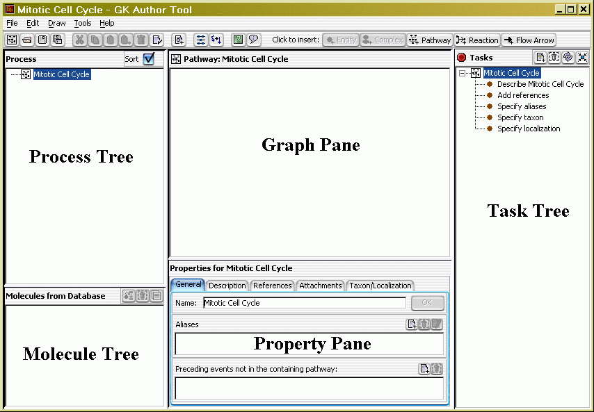
Double click an empty area of the graphic editor panel for "Mitotic Cell Cycle" pathway to bring up the property dialog for this pathway. Select the description tab. Copy and paste this sentence into the text area of the dialog: "The replication of the genome and the subsequent segregation of chromosomes into daughter cells are controlled by a series of events collectively known as the cell cycle." Click "OK" to close the dialog. Note that the task "Describe Mitotic Cell Cycle" has been removed from the task panel.
You should save your newly created project frequently to protect your newly created data. Click "Save Project" under the File menu, type Ctrl-S, or click the save button in the menu bar. (Note: most common operations in the author tool can be started either by choosing an item under a drop-down menu, by clicking a button on the menu bar, or by typing a Ctrl-letter sequence. Some can also be started by right-clicking the appropriate object in the application window. However, the operation works the same way, no matter how you start it.) You are asked for a new file name. Type "MitoticCellCycle". The project is saved as an XML file with the default extension ".gkb": MitoticCellCycle.gkb.
To create a new sub-pathway under Mitotic Cell Cycle, right-click the Mitotic Cell Cycle graphic editor panel to bring up the popup menu to choose "Insert Pathway", choose "Insert Pathway" under the Draw menu, type Ctrl-P, or click the insert pathway button on the menu bar. Input "G1 Phase" as the display name for this pathway. Note the appearance of a new set of tasks in the right-hand panel of the window. Note also that the taxon property for "G1 Phase" is automatically set to "Homo sapiens", consistent with the taxon chosen for the larger pathway, Mitotic Cell Cycle, of which it is a part.
Repeat these steps to create sub pathways G1/S Transition, S Phase, G2 Phase, G2/M Transition, M Phase, and M/G1 Transition.
In the same way, to create a new molecule ("entity"), complex, reaction, or flow arrow (to connect successive reactions in a pathway), use the "Insert Entity" (Ctrl-E), "Insert Complex" (Ctrl-M), "Insert Reaction" (Ctrl-R), or "Insert Flow Arrow" (Ctrl-F) options of the Draw menu, see below.
Now we want to annotate causal or temporal relationships (dependencies) among these sub pathways. For example, we want to indicate that G1 Phase precedes G1/S Transition. The easiest way to do this is to select G1 Phase by clicking the G1 Phase node in the graphic editor panel, move the mouse cursor a little bit to display the link widgets (the four gray arrows around the node), choose one outbound arrow (the top or right one) and drag it to G1/S Transition node. Release the arrow after the color of G1/Transition node changes to green. G1 Phase and G1/S Transition are now linked together, and the direction of the arrow indicates the order of the events.
Use the same method to create dependences between G1/S Transition and S Phase, S Phase and G2 Phase, G2 Phase and G2/M Phase, G2/M Phase and M Phase, M Phase and M/G1 Transition, and M/G1 Transition and G1 Phase.
You may want to improve the layout of these pathways and dependencies. You can use an automatic layout (Click button 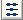, or use shortcut F4 key). Alternatively, you can arrange sub-pathways manually. Here, drag the sub-pathway objects (G1 phase, etc.) into a circular arrangement to represent the cell cycle. The flow arrows will automatically follow the objects they link.
You can also change the default background and text colors for a node, and the line color and the width for an edge to improve the appearance of the layout. Here we want to use blue as background and yellow as text color for G1 Phase, S Phase, G2 Phase, and M Phase. Click G1 Phase to select it. Right click to bring up the popup menu. Select "Format Display". The Format Node Display dialog appears. Click to choose colors for text and background. Choose a blue color for background, and a yellow color for text. The selected color is displayed in the preview pane immediately. Do same thing for S Phase, G2 Phase and M Phase. You
may also change the line color and width for an edge by selecting that edge and clicking "Format Display" popup menu.
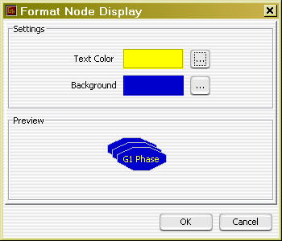
The following image is the pathway we created. Click to save the changes.
Now we want to add second level events to G1/S Transition pathway. Double click the "G1/S Transition pathway" node to open a pathway editor for G1/S Transition pathway. Insert three pathways, "Cyclin E associated events during G1/S transition", "G1/S-Specific Transciption", and "Activation of the pre-replication complex" (See step 5). Since there are no dependencies among these three pathways, no flow arrows are needed. Save the project.
The Pathway "Activation of the pre-replicative complex" contains several reactions. Reactions can only be rendered as nodes in pathways.
Double click the "Activation of the pre-replicative complex" pathway node to open a pathway editor. Click the "Insert Reaction" button 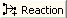. A reaction property dialog appears. Input "Mcm10 associates with the pre-replicative complex, stabilizing Mcm2-7" as display name. Click OK. A node for this reaction is inserted into the pathway editor. Using the same method, insert the following reaction nodes:
And one sub pathway: Cdc45 associates with the pre-replicative complex at the origin.
There are dependencies among the reactions we just inserted. Before continuing, save the changes. Insert flow arrows, and attach reaction nodes to the flow arrows as above(see
step 5). You don't need to consider the layout while attaching nodes to edges. After attaching is done, click the automatic layout button to do layout.
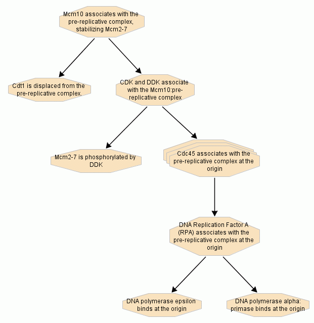
A reaction should have inputs, outputs and/or catalysts. Now we want to add inputs, outputs and catalysts to the reactions. Double click the reaction node "Mcm10 associates with the pre-replicative complex, stabilizing Mcm2-7" to open a reaction editor for this reaction. Right click the graphic panel to bring up the popup menu. Select menu item "Insert Entity As Input" to bring up the entity property dialog. Input "Mcm10" as the display name, and click OK button. Right click the graphic panel and select "Insert Complex As Input" to add a new complex "pre-replicative complex" as another input. Use a similar way to add a complex "Mcm10:pre-replicative complex" as the output. Automatically lay out the reaction with the "Auto layout" popup menu.

Reaction "Mcm10 associates with the pre-replicative complex" is a binding reaction. The output is a complex of Mcm10 protein and the pre-replicative complex. The author tool can be used to create this complex graphically from its components. Double click the complex node "Mcm10:pre-replicative complex" to open a complex editor. Hold the ctrl key, and click "Mcm10" and "pre-replicative complex" in the left process tree (Mitotic Cell Cycle/"G1/S Transition"/Activation of the pre-replication complex) to select these two nodes. Drag and drop these two nodes to the graphic panel for "Mcm10:pre-replicative complex". Using automatic layout or manually arrange the positions of these two nodes. "Mcm10" and "pre-replicative complex" are inserted as shortcuts to the original "Mcm10" and "pre-replicative complex" in the reaction "Mcm10 associates with the pre-replicative complex". A shortcut and its target share the same properties. One object can have multiple shortcuts.
Another convenient way to attach entities to reactions is drag and drop them from a precompiled entity list generated from the Reactome central database. (Generating such lists is not covered in this tutorial.) Double click reaction node "Cdt1 is displaced from the pre-replicative complex" to open the reaction editor. Select the proteins section in the tree "Molecules from Database" (see image below), find "Cdt1 [nucleus]" in the tree, and drag and drop it to the graphic panel for reaction "Cdt1 is displaced from the pre-replicative complex". A role dialog will appear for "Cdt1 [nucleus]". Choose output (i.e., Cdt1 [nucleus] is an output of this reaction) and click OK. "Cdt1 [nucleus]" is attached to the reaction now. Other inputs and outputs can be added to the reaction.
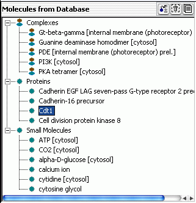
Once you have created an entity or a complex in connection with one reaction, you can re-use it in other reactions. Double click reaction node "CDK and DDK associate with the Mcm10:pre-replicative complex" to open a reaction editor for this reaction. Insert "CDK" and "DDK" as two inputs. Select "Mcm10:pre-replicative complex" in the process tree and drag-and-drop it to the reaction editor. A role dialog box appears; choose input and click OK. "Mcm10:pre-replicative complex" (strictly, a shortcut to it) is inserted as an input.
The task tree lists reminders of all the information needed by the Reactome for each entity (molecule or complex) and event (reaction or pathway) you have created. To work on a task on the list, double click it and an appropriate dialog will open. After the task is done, it will be removed from the list. You can also add or remove tasks by using popup menu or buttons at the top-left corner
(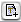 for adding tasks or for removing tasks).
To modify information that you have already provided (e.g., to revise a description of an event that you wrote earlier, or to add an additional reference), open the appropriate property dialog as described above.
In this simple tutoral, we created a small part of the mitotic cell cycle. We hope that you find this tutorial helpful, and that you enjoy working with the Author Tool. Please send any questions or comments to help@reactome.org.